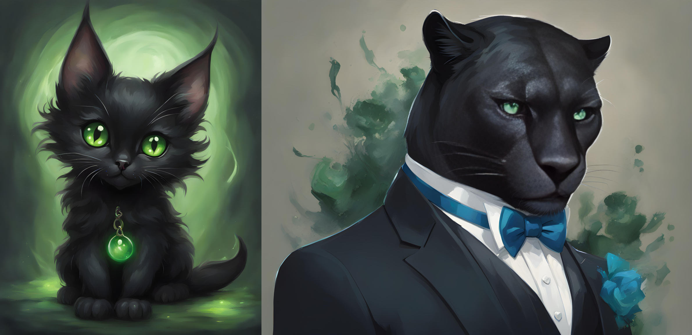

Tymely News
Character Feature: Mashu'ra

(Left) An AI generated image of Mashu'ra, in the form of a little, black kitten, with green eyes.
(Right) An AI generated image of Simmons in his cat-man form, wearing the magic, shape-shifting clothes Mashu'ra gave him, in the form of a tuxedo. His cat-man form is a result of Mashu'ra partially possessing his body.

Mashu'ra is often called Masher, because when spoken by others, a demon's true name gives power to summon or compel them. He's the little demon that lives inside Little Miss Secret's top hat, in the novel She Hunts Demons. He's stuck in the form of an adorable little, black kitten, a fact that annoys and embarrasses him.
Mashu'ra was originally her mother's familiar and as a result of that demon-witch's betrayal of demon-kind, he's also considered a traitor by demons.
He's an imp, which is effectively a juvenile demon that isn't yet strong enough to properly possess a human host. Imps normally grow in strength by feeding on the blood left-over from their master's human kills, until they're strong enough to possess and dominate a human host. Alternatively, an imp can be summoned by a witch to server as a familiar and fed raw magic until they mature.
With rare exception, demons gain an initial form from the first creature they possess and since they're normally too weak as an imp to possess a human, they take on animal traits. This is why demons tend to have such sharp senses of smell. Before that, they normally resemble one or both of their parents.
In the case of Mashu'ra, he was summoned into the body of a house cat by Annmarie Nosset, the mother of Little Miss Secret. When she was killed, he lost the power she fed him and shrunk in size until he became a kitten.
He normally looks after Little Miss Secret's arsenal of weapons, cleaning and loading her firearms for her, on top of keeping her collection of blades sharp, but please don't ask how a kitten accomplishes that, because it's a big secret!
Mashu'ra is an expert on both witch and demon magic, because he spent so many years serving one of the most powerful demon-witches the world ever saw.
He uses his magic to keep an eye on Little Miss Secret and her activities from inside her hat, so he's always up to date on current events, unless he's been napping.
During the early portions of She Hunts Demons, Mashu'ra watches Simmons, coming to respect the man enough to make him an unusual offer: if Simmons would allow Mashu'ra to possess his body, they would work as a team, to kill demons together. Seeing an opportunity to finally get into the field, Simmons accepts.
While an imp can possess a human body, they don't have the strength to suppress the human mind, which effectively leaves the human in charge, with the full strength of a demon! When Simmons uses this power, he grows extremely large, muscular and takes on feline features, includes claws, fangs and black fur.
In cat-man form, Simmons is in great pain, but the pain feeds Mashu'ra's power, making him very strong and durable.
When injured in cat-man form, he heals extremely rapidly, the pain of which feeds into Mashu'ra, becoming greater power and that goes back into Simmons, making him even stronger. As a result, this transformation makes him nigh-indestructible, but with a seriously dangerous caveat: the more damage Simmons takes, the more Mashu'ra's animal instincts flood his mind and the dumber he becomes. If things go too far, his higher mental functions shut down, leaving him running on raw emotion.
Even worse, the pain Simmons feels is like a powerful drug to Mashu'ra, causing him to get extremely high. In short, if the duo takes too much damage, they become an unstoppable killing machine that's a danger to everyone. When they finally calm down and separate, Mashu'ra is effectively left suffering the powerful after-effects of a drug over-dose. Being a demon, this can't kill him, but it can and does make him wish he were dead.
Demons have tried this combination of human and imp in the past, inevitably leading to an out of control killing machine. The secret sauce that keeps Simmons and Mashu'ra alive and functioning in this state is impossible for such evil beings to replicate: an incorruptible man willingly working with and trusting a demon for the sake of a common cause.
Late in the novel, as a result of destroying the wardrobe of Simmons, Mashu'ra gives the man a magic, demon-made, shape-shifting suit, which is able to take any form desired and automatically adjusts its size to match Simmons as he changes size. Incidentally, it also serves as light body armor that's able to stop bullets and staunch bleeding, which gives him a little extra protection, even when he's out of cat-man form.
Tags: ashen-blades, character-feature